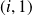

Déplacement de voitures dans la file
Cette partie va mettre en place les fonctions qui vont assurer le déplacement des voitures dans les files.
Question
Écrire la fonction avancer() prenant en paramètre une liste de départ, un booléen indiquant si la case la plus à gauche doit devenir occupée lors de l'étape de simulation, et renvoyant la liste obtenue par une étape de simulation.
def avancer(L, b):
return([b] + L[: -1])
Remarque :
Je ne vois pas pourquoi le sujet ne demandait pas cette simple fonction.
Question
Écrire la fonction avancer_fin() prenant en paramètre une liste de départ et l'indice d'une case à partir de laquelle seules les voitures situées sur la case de cet indice ou à droite de cette case peuvent avancer normalement, les autres voitures ne se déplaçant pas.
Utiliser la fonction avancer(L, b) définie précédemment.
def avancer_fin(L, m):
return(L[: m] + avancer(L[m:], False))
Question
Écrire la fonction avancer_debut() prenant en paramètre une liste de départ, un booléen et l'indice d'une case inoccupée à partir de laquelle seules les voitures situées à gauche de la case de cet indice peuvent avancer normalement, les autres voitures ne se déplaçant pas.
Le booléen indique si une nouvelle voiture est introduite sur la case la plus à gauche.
Utiliser la fonction avancer(L, b) définie précédemment.
def avancer_debut(L, b, m):
return(avancer(L[: m + 1], b) + L[m + 1 :])
Question
Écrire la fonction avancer_debut_bloque() prenant en paramètre une liste de départ, un booléen et l'indice d'une case occupée ou non qui est temporairement inaccessible et bloque l'avancée des voitures. Une voiture située immédiatement à gauche de la case de cet indice ne peut pas avancer. Les voitures situées plus à gauche peuvent avancer, à moins d'être bloquées par une cas occupée. Les autres voitures ne se déplacent pas.
Le booléen indique si une nouvelle voiture est introduite sur la case la plus à gauche.
Utiliser la fonction avancer_debut(L, b, m) définie précédemment.
def avancer_debut_bloque(L, b, m):
# Recherche de la première case libre en amont de mi = m - 1
while i >= 0 and L[i]:
i -= 1
if i < 0:
# la première case est bouchée, une nouvelle voiture ne peut être inséréereturn(avancer_debut(L, False, i))
else:return(avancer_debut(L, b, i))
Animation d'une file
Voici une fonction à tester :
import numpy.random as rd
# version pixeldef px_simul_file(Linit, p = 0.5, N = 100, pause = 0.5):
'''Simulation d'une file de voitures. Linit est la liste initiale. L'apparition d'une voiture sur la file suit une loi de Bernoulli de paramètre p, par défaut de 0.5. La simulation comporte N étapes, par défaut 100. La durée de pause entre chaque étape est de 0.5 seconde par défaut.'''n = len(Linit)
px.initialiser(n, 1, 50)
for i in range(n):
px.marquer(i, 0, 0 if Linit[i] else 1)
px.afficher(5)
L = Linit[:]
# Permet de patienter 5 secondes avant de lancer la simulationfor _ in range(N):
L = avancer(L, rd.binomial(1, p))
for i in range(n):
px.marquer(i, 0, 0 if L[i] else 1)
px.afficher(pause)
px.afficher()
L'apparition d'une voiture dans la file est modélisée par une loi de Bernoulli de paramètre p (p < 1). Pour cela, la fonction binomial du module numpy.random est utilisée.
Question
Interpréter la ligne :
px.marquer(i, 0, 0 if Linit[i] else 1)
Le pixel de coordonnées  est marqué en noir (0) si une voiture est présente, blanc (1) sinon.